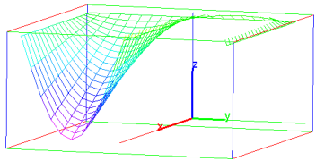

17.7.1 2D parametric curve
-
To draw a parametric curve in ℝ2,
plotparam takes two mandatory and one optional
argument:
-
exprs, a list of two real expressions or one
complex expression involving the parameter.
- var, the parameter, optionally with a range
var=a..b. If no range is given, the values of
t- and t+ from the graphics configuration will
be used (see Section 2.5.8).
- Optionally, tstep=n, to set the discretization
step.
- plotparam(exprs,var ⟨,tstep=n ⟩)
draws the parametric representation of the curve.
Examples
| plotparam(cos(x)+i*sin(x),x) |
or:
| plotparam([cos(x),sin(x)],x) |
| plotparam(sin(t)+i*cos(t),t=-4..1) |
or:
| plotparam(sin(x)+i*cos(x),x=-4..1) |
or, with t-=4,t+=1 in the graphic configuration:
| plotparam(sin(t)+i*cos(t)) |
| plotparam(sin(t)+i*cos(t),t=-4..1,tstep=0.5) |
or, with t-=4,t+=1 in the graphic configuration:
| plotparam(sin(t)+i*cos(t),t,tstep=0.5) |
